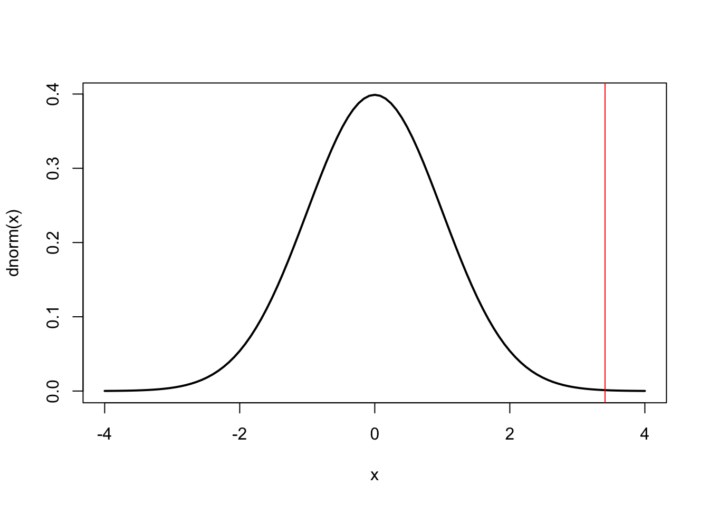

Tuesday, October 4, 2022
A former PhD student from this department, who I supervised, is looking for a masters-level geographer to assist with disease mapping and basic spatial analysis as applied to livestock disease.
To support non-spatial scientists (virologists, field epidemiologists) and post-docs (some with spatial analysis expertise) in the mapping and visualizing of disease occurrence data from across the US and encouraged to develop independent projects leading to publication. Flexible work location especially if working toward a PhD.
Here’s the link: https://www.zintellect.com/Opportunity/Details/USDA-ARS-2022-0343
Today
- Extended mapping example: tornado frequency
- Geo-computation on simple feature data frames
- Making raster maps
- Spatial density maps
- Assignment #3 (Due: Thursday)
Extended mapping example: tornado frequency
Let’s look at another example. Here we have the tornado data from the Storm Prediction Center (SPC) as a shapefile in the directory 1950-2018-torn-aspath.
The files are imported with the sf::st_read() function.
Torn.sf <- sf::st_read(dsn = here::here("data", "1950-2020-torn-initpoint"),
layer = "1950-2020-torn-initpoint")## Reading layer `1950-2020-torn-initpoint' from data source
## `/Users/jameselsner/Desktop/ClassNotes/QG-2022/data/1950-2020-torn-initpoint'
## using driver `ESRI Shapefile'
## Simple feature collection with 66244 features and 22 fields
## Geometry type: POINT
## Dimension: XY
## Bounding box: xmin: -163.53 ymin: 17.7212 xmax: -64.7151 ymax: 61.02
## Geodetic CRS: WGS 84The result is a simple feature data frame with 66244 features (observations) and 23 columns.
Each observation is a unique tornado. The coordinate reference system is geographic (longitude, latitude) with EPSG tag of 4326.
You look inside the simple feature data frame with the glimpse() function from the {dplyr} package.
Torn.sf |>
dplyr::glimpse()## Rows: 66,244
## Columns: 23
## $ om <dbl> 192, 193, 195, 196, 197, 194, 198, 199, 200, 201, 4, 5, 6, 7,…
## $ yr <dbl> 1950, 1950, 1950, 1950, 1950, 1950, 1950, 1950, 1950, 1950, 1…
## $ mo <dbl> 10, 10, 11, 11, 11, 11, 12, 12, 12, 12, 1, 1, 1, 1, 1, 1, 1, …
## $ dy <dbl> 1, 9, 20, 20, 20, 4, 2, 2, 2, 2, 13, 25, 25, 26, 3, 3, 3, 11,…
## $ date <chr> "1950-10-01", "1950-10-09", "1950-11-20", "1950-11-20", "1950…
## $ time <chr> "21:00:00", "02:15:00", "02:20:00", "04:00:00", "07:30:00", "…
## $ tz <dbl> 3, 3, 3, 3, 3, 3, 3, 3, 3, 3, 3, 3, 3, 3, 3, 3, 3, 3, 3, 3, 3…
## $ st <chr> "OK", "NC", "KY", "KY", "MS", "PA", "IL", "IL", "AR", "IL", "…
## $ stf <dbl> 40, 37, 21, 21, 28, 42, 17, 17, 5, 17, 5, 29, 17, 48, 29, 17,…
## $ stn <dbl> 23, 9, 1, 2, 14, 5, 7, 8, 12, 9, 1, 2, 3, 1, 1, 2, 1, 2, 3, 4…
## $ mag <dbl> 1, 3, 2, 1, 1, 3, 2, 3, 3, 1, 3, 2, 2, 2, 3, 3, 1, 2, 3, 2, 2…
## $ inj <dbl> 0, 3, 0, 0, 3, 1, 3, 25, 0, 0, 1, 5, 0, 2, 3, 3, 1, 0, 12, 5,…
## $ fat <dbl> 0, 0, 0, 0, 0, 0, 1, 2, 0, 0, 1, 0, 0, 0, 0, 0, 0, 0, 1, 0, 0…
## $ loss <dbl> 4, 5, 5, 5, 4, 5, 4, 6, 1, 4, 3, 5, 5, 0, 6, 5, 4, 4, 4, 5, 5…
## $ closs <dbl> 0, 0, 0, 0, 0, 0, 0, 0, 0, 0, 0, 0, 0, 0, 0, 0, 0, 0, 0, 0, 0…
## $ slat <dbl> 36.73, 34.17, 37.37, 38.20, 32.42, 40.20, 38.97, 38.75, 36.12…
## $ slon <dbl> -102.52, -78.60, -87.20, -84.50, -89.13, -76.12, -90.05, -89.…
## $ elat <dbl> 36.8800, 34.1701, 37.3701, 38.2001, 32.4201, 40.4000, 39.0700…
## $ elon <dbl> -102.3000, -78.5999, -87.1999, -84.4999, -89.1299, -75.9300, …
## $ len <dbl> 15.8, 2.0, 0.1, 0.1, 2.0, 15.9, 18.8, 18.0, 7.8, 9.6, 0.6, 2.…
## $ wid <dbl> 10, 880, 10, 10, 37, 100, 50, 200, 10, 50, 17, 300, 100, 133,…
## $ fc <dbl> 0, 0, 0, 0, 0, 0, 0, 0, 0, 0, 0, 0, 0, 0, 0, 0, 0, 0, 0, 0, 0…
## $ geometry <POINT [°]> POINT (-102.52 36.73), POINT (-78.6 34.17), POINT (-87.…The first 22 columns are variables (attributes). The last column contains the geometry. The column labeled geometry is a simple feature column in well-known text (WKT) format.
Each tornado is a coded as a LINESTRING with a start and end location. The simple feature column is where the tmap::tm_shape() and gom_sf() functions look for the mapping information.
Here start by mapping the tracks of all tornadoes since 2011. First you filter Torn.sf keeping only tornadoes occurring after 2010.
Torn.sf <- Torn.sf |>
dplyr::filter(yr >= 2011) Next you get a boundary file of the lower 48 states borders using the USAboundaries::us_states() function. You remove rows corresponding to Hawaii, Alaska, and Puerto Rico.
USA_48.sf <- USAboundaries::us_states() |>
dplyr::filter(!state_name %in% c("Hawaii", "Alaska", "Puerto Rico"))The objects Torn.sf and USA_48.sf are simple feature data frames so you map variables in them as layers with successive calls to the tmap::tm_shape() function. For example, you start with the boundaries of the lower 48 states using tmap::tm_polygons() and then overlay the tornadoes with tmap::tm_shape() and tmap::tm_lines().
tmap::tm_shape(shp = USA_48.sf) +
tmap::tm_polygons() +
tmap::tm_shape(shp = Torn.sf) +
tmap::tm_dots(col = "red")
Let’s try something a bit more complicated. Suppose you want a map displaying the number of tornadoes originating in each state. You first filter Torn.sf to include only tornadoes occurring in the lower 48 states, you then group by state and summarize with the n() function that returns the number of cases by the grouping variable (st). You rename the variable st to match the variable state_abbr variable in the USA_48.sf. Finally you remove the sfc with the sf::st_drop_geometry() function.
Torn_Counts.df <- Torn.sf |>
dplyr::filter(!st %in% c("PR", "HI" , "AK", "DC", "VI")) |>
dplyr::group_by(st) |>
dplyr::summarize(nT = dplyr::n()) |>
dplyr::rename(state_abbr = st) |>
sf::st_drop_geometry()
Torn_Counts.df |>
dplyr::glimpse()## Rows: 48
## Columns: 2
## $ state_abbr <chr> "AL", "AR", "AZ", "CA", "CO", "CT", "DE", "FL", "GA", "IA",…
## $ nT <int> 609, 326, 36, 79, 370, 24, 12, 413, 394, 456, 26, 529, 311,…The resulting data frame contains the state abbreviation and the corresponding number of tornadoes. There were 609 tornadoes in Alabama since 2011, 326 in Arkansas, etc.
You then join the counts data frame with the map boundary simple feature data frame using the dplyr::left_join() function. Note the y = argument to the function only works with data frames so that is why you dropped the geometry with sf::st_drop_geometry() above.
Count_Map.sf <- USA_48.sf |>
dplyr::left_join(Torn_Counts.df,
by = "state_abbr") |>
dplyr::select(nT)
Count_Map.sf |>
dplyr::glimpse()## Rows: 49
## Columns: 2
## $ nT <int> 79, 214, 26, 396, 456, 474, 94, 21, 107, 53, 12, 184, 529, 11…
## $ geometry <MULTIPOLYGON [°]> MULTIPOLYGON (((-118.594 33..., MULTIPOLYGON (((…Note: the sf::st_join() function can be used for spatial data joins. Instead of relying on a common (key) variable, it relies on spatial relations. More information is available here: https://geocompr.robinlovelace.net/spatial-operations.html#spatial-joining
Finally you make a thematic map of the counts.
tmap::tm_shape(shp = Count_Map.sf) +
tmap::tm_polygons(col = "nT",
title = "Tornado Counts",
palette = "Reds")
You can improve the defaults with additional layers including text, compass, and scale bar.
tmap::tm_shape(shp = Count_Map.sf) +
tmap::tm_polygons(col = "nT",
border.col = "gray70",
title = "Tornado Counts",
palette = "Reds") +
tmap::tm_text("nT", size = 1) +
tmap::tm_compass() +
tmap::tm_scale_bar(lwd = .5)
Summary: The format of the {tmap} objects (meoms) are like those of the {ggplot2} geometric objects (geoms) making it easy to get to a publication-quality map. Fine details are worked out in production.
Geo-computation on simple feature data frames
Spatial data analysis often requires calculations on the geometry. Two of the most common are computing centroids (geographic centers) and buffers.
Geo-computation should be done on coordinates that have been projected. To see what CRS the simple feature data frame has use sf::st_crs().
sf::st_crs(USA_48.sf)## Coordinate Reference System:
## User input: EPSG:4326
## wkt:
## GEOGCRS["WGS 84",
## DATUM["World Geodetic System 1984",
## ELLIPSOID["WGS 84",6378137,298.257223563,
## LENGTHUNIT["metre",1]]],
## PRIMEM["Greenwich",0,
## ANGLEUNIT["degree",0.0174532925199433]],
## CS[ellipsoidal,2],
## AXIS["geodetic latitude (Lat)",north,
## ORDER[1],
## ANGLEUNIT["degree",0.0174532925199433]],
## AXIS["geodetic longitude (Lon)",east,
## ORDER[2],
## ANGLEUNIT["degree",0.0174532925199433]],
## USAGE[
## SCOPE["Horizontal component of 3D system."],
## AREA["World."],
## BBOX[-90,-180,90,180]],
## ID["EPSG",4326]]Note the length unit (LENGTHUNIT[]) is meter.
Here transform the CRS of the USA_48.sf simple feature data frame to a U.S. National Atlas equal area (EPSG: 2163) and then check it.
USA_48.sf <- USA_48.sf |>
sf::st_transform(crs = 2163)
sf::st_crs(USA_48.sf)## Coordinate Reference System:
## User input: EPSG:2163
## wkt:
## PROJCRS["NAD27 / US National Atlas Equal Area",
## BASEGEOGCRS["NAD27",
## DATUM["North American Datum 1927",
## ELLIPSOID["Clarke 1866",6378206.4,294.978698213898,
## LENGTHUNIT["metre",1]]],
## PRIMEM["Greenwich",0,
## ANGLEUNIT["degree",0.0174532925199433]],
## ID["EPSG",4267]],
## CONVERSION["US National Atlas Equal Area",
## METHOD["Lambert Azimuthal Equal Area (Spherical)",
## ID["EPSG",1027]],
## PARAMETER["Latitude of natural origin",45,
## ANGLEUNIT["degree",0.0174532925199433],
## ID["EPSG",8801]],
## PARAMETER["Longitude of natural origin",-100,
## ANGLEUNIT["degree",0.0174532925199433],
## ID["EPSG",8802]],
## PARAMETER["False easting",0,
## LENGTHUNIT["metre",1],
## ID["EPSG",8806]],
## PARAMETER["False northing",0,
## LENGTHUNIT["metre",1],
## ID["EPSG",8807]]],
## CS[Cartesian,2],
## AXIS["easting (X)",east,
## ORDER[1],
## LENGTHUNIT["metre",1]],
## AXIS["northing (Y)",north,
## ORDER[2],
## LENGTHUNIT["metre",1]],
## USAGE[
## SCOPE["Statistical analysis."],
## AREA["United States (USA) - onshore and offshore."],
## BBOX[15.56,167.65,74.71,-65.69]],
## ID["EPSG",9311]]The centroid calculation locates the center of geographic objects representing the center of mass for the spatial object (think of balancing a plate on your finger).
You calculate the geographic centroid of each of the lower 48 states with the st_centroid() function.
geo_centroid.sf <- USA_48.sf |>
sf::st_centroid()## Warning in st_centroid.sf(USA_48.sf): st_centroid assumes attributes are
## constant over geometries of xThe result is a simple feature data frame where the geometry is a single point for each state. You keep track of the fact that this is a simple feature data frame by using an object name that includes appends with .sf.
The warning tells you that the attributes in the new simple feature data frame may not make sense with the new geometry.
For example, compare the first two rows of the two simple feature data frames.
head(geo_centroid.sf, n = 2)## Simple feature collection with 2 features and 12 fields
## Geometry type: POINT
## Dimension: XY
## Bounding box: xmin: -1711894 ymin: -666720.2 xmax: 791612.5 ymax: 7216.145
## Projected CRS: NAD27 / US National Atlas Equal Area
## statefp statens affgeoid geoid stusps name lsad aland
## 1 06 01779778 0400000US06 06 CA California 00 403671196038
## 2 55 01779806 0400000US55 55 WI Wisconsin 00 140292246684
## awater state_name state_abbr jurisdiction_type
## 1 20294133830 California CA state
## 2 29343721650 Wisconsin WI state
## geometry
## 1 POINT (-1711894 -666720.2)
## 2 POINT (791612.5 7216.145)head(USA_48.sf, n = 2)## Simple feature collection with 2 features and 12 fields
## Geometry type: MULTIPOLYGON
## Dimension: XY
## Bounding box: xmin: -2036903 ymin: -1242190 xmax: 1027143 ymax: 269562.7
## Projected CRS: NAD27 / US National Atlas Equal Area
## statefp statens affgeoid geoid stusps name lsad aland
## 1 06 01779778 0400000US06 06 CA California 00 403671196038
## 2 55 01779806 0400000US55 55 WI Wisconsin 00 140292246684
## awater state_name state_abbr jurisdiction_type
## 1 20294133830 California CA state
## 2 29343721650 Wisconsin WI state
## geometry
## 1 MULTIPOLYGON (((-1719948 -1...
## 2 MULTIPOLYGON (((1017108 129...The land area (aland) makes sense when the geometry is MULTIPOLYGON it is less congruent when the geometry is POINT.
You map the points using the tm_dots() function after first mapping the state borders.
tmap::tm_shape(shp = USA_48.sf) +
tmap::tm_borders(col = "gray70") +
tmap::tm_shape(shp = geo_centroid.sf) +
tmap::tm_dots(size = 1,
col = "black")
Buffers are polygons representing the area within a given distance of a geometric feature. Regardless of whether the feature is a point, a line, or a polygon.
The function sf::st_buffer() computes the buffer and you set the distance with the dist = argument. Here you create a new simple feature data frame with only the state of Florida.
You then compute a 50 km (50,000 meters) buffer and save the resulting polygon
FL.sf <- USA_48.sf |>
dplyr::filter(state_abbr == "FL")
FL_buffer.sf <- FL.sf |>
sf::st_buffer(dist = 50000)Create a map containing the state border, the 50 km buffer, and the centroid. Include a compass arrow and a scale bar.
tmap::tm_shape(FL_buffer.sf) +
tmap::tm_borders(col = "gray70") +
tmap::tm_shape(FL.sf) +
tmap::tm_borders() +
tmap::tm_shape(geo_centroid.sf) +
tmap::tm_dots(size = 2) +
tmap::tm_compass(position = c("left", "bottom")) +
tmap::tm_scale_bar(text.size = 1,
position = c("left", "bottom"))
The result is a map that could serve as a map of your study area (usually Figure 1 in scientific report).
Making raster maps
The package {ggmap} retrieves raster map tiles (groups of pixels) from services like Google Maps and plots them using the {ggplot2} grammar.
Map tiles are rasters as static image files generated by the mapping service. You do not need data files containing information on things like scale, projection, boundaries, etc. because that information is created by the map tile.
This limits the ability to redraw or change the appearance of the map but it allows for easy data overlays onto the map.
You get map tiles with the ggmap::get_map() function from the {ggmap} package. You specify the bounding box (or the center and zoom). The bounding box requires the left-bottom and right-top corners of the region specified as longitude and latitude in decimal degrees.
For instance, to obtain a map of Tallahassee from the stamen mapping service you first set the bounding box (left-bottom corner as -84.41, 30.37 and right-top corner as -84.19, 30.55) then use the ggmap::get_stamenmap() function with a zoom level of 12.
library(ggmap)
TLH_bb <- c(left = -84.41,
bottom = 30.37,
right = -84.19,
top = 30.55)
TLH_map <- ggmap::get_stamenmap(bbox = TLH_bb,
zoom = 12)
TLH_map## 609x641 terrain map image from Stamen Maps.
## See ?ggmap to plot it.The saved object (TLH_map) is a raster map specified by the class ggmap.
To view the map, use ggmap() function.
ggmap::ggmap(TLH_map)
The zoom = argument in the ggmap::get_stamenmap() function controls the level of detail. The larger the number, the greater the detail.
Trial and error helps you decide on the appropriate level of detail depending on the data you need to visualize. Use boxfinder to determine the exact longitude/latitude coordinates for the bounding box you wish to obtain.
Or you can use the tmaptools::geocode_OSM() function from the {tmaptools} package. You first specify a location then get a geo-coded coordinate.
FSU.list <- tmaptools::geocode_OSM("Florida State University")
FSU.list## $query
## [1] "Florida State University"
##
## $coords
## x y
## -84.29748 30.44236
##
## $bbox
## xmin ymin xmax ymax
## -84.30650 30.43563 -84.28846 30.44907The object FSU.list is a list containing three elements query, coords and bbox. You are interested in the bbox element so you save that as vector that you assign FSU_bb and rename the elements to left, bottom, right, and top.
FSU_bb <- FSU.list$bbox
names(FSU_bb) <- c("left", "bottom",
"right", "top")
FSU_bb## left bottom right top
## -84.30650 30.43563 -84.28846 30.44907You then get the map tiles corresponding to the bounding box from the stamen map service with a zoom of 16 and create the map.
FSU_map <- ggmap::get_stamenmap(bbox = FSU_bb,
zoom = 16)
ggmap::ggmap(FSU_map)
Add data to the raster map. Let’s consider a map of Chicago.
CHI_bb <- c(left = -87.936287,
bottom = 41.679835,
right = -87.447052,
top = 42.000835)
CHI_map <- ggmap::get_stamenmap(bbox = CHI_bb,
zoom = 11,
messaging = FALSE)
ggmap::ggmap(CHI_map)
The city of Chicago has a data portal publishing a large volume of public records. Here you look at crime data from 2017. The file car_thefts.csv is a spreadsheet obtained from that portal with a list of car thefts.
You read these data using the readr::read_csv() function.
carTheft <- readr::read_csv(file = here::here("data", "car_thefts.csv"))## New names:
## Rows: 11416 Columns: 23
## ── Column specification
## ──────────────────────────────────────────────────────── Delimiter: "," chr
## (10): Case.Number, Date, Block, IUCR, Primary.Type, Description, Locatio... dbl
## (11): ...1, ID, Beat, District, Ward, Community.Area, X.Coordinate, Y.Co... lgl
## (2): Arrest, Domestic
## ℹ Use `spec()` to retrieve the full column specification for this data. ℹ
## Specify the column types or set `show_col_types = FALSE` to quiet this message.
## • `` -> `...1`head(carTheft)## # A tibble: 6 × 23
## ...1 ID Case.…¹ Date Block IUCR Prima…² Descr…³ Locat…⁴ Arrest Domes…⁵
## <dbl> <dbl> <chr> <chr> <chr> <chr> <chr> <chr> <chr> <lgl> <lgl>
## 1 1 1.08e7 JA1075… 01/0… 004X… 0910 MOTOR … AUTOMO… STREET FALSE FALSE
## 2 2 1.08e7 JA1087… 01/0… 032X… 0930 MOTOR … THEFT/… STREET FALSE FALSE
## 3 3 1.08e7 JA1106… 01/0… 011X… 0910 MOTOR … AUTOMO… STREET FALSE FALSE
## 4 4 1.08e7 JA1099… 01/0… 061X… 0910 MOTOR … AUTOMO… SIDEWA… FALSE FALSE
## 5 5 1.08e7 JA1109… 01/1… 049X… 0910 MOTOR … AUTOMO… STREET FALSE FALSE
## 6 6 1.08e7 JA1110… 01/1… 037X… 0910 MOTOR … AUTOMO… RESIDE… FALSE FALSE
## # … with 12 more variables: Beat <dbl>, District <dbl>, Ward <dbl>,
## # Community.Area <dbl>, FBI.Code <chr>, X.Coordinate <dbl>,
## # Y.Coordinate <dbl>, Year <dbl>, Updated.On <chr>, Latitude <dbl>,
## # Longitude <dbl>, Location <chr>, and abbreviated variable names
## # ¹Case.Number, ²Primary.Type, ³Description, ⁴Location.Description, ⁵Domestic
## # ℹ Use `colnames()` to see all variable namesEach row of the data frame is a single report of a vehicle theft. Location is encoded in several ways, though most importantly for your purpose the longitude and latitude of the theft is encoded in the Longitude and Latitude columns, respectively.
You use the geom_point() function to map the location of every theft. Because ggmap() uses the map tiles (here, defined by CHI_map) as the first layer, you specify data and mapping inside of geom_point().
library(ggplot2)
ggmap::ggmap(CHI_map) +
geom_point(data = carTheft,
mapping = aes(x = Longitude,
y = Latitude),
size = .25,
alpha = .1)## Warning: Removed 425 rows containing missing values (geom_point).
Note the function ggmap::ggmap() replaces the function ggplot().
Spatial density maps
Instead of relying on geom_point() and plotting the raw data, another approach is to create a heat map. This is done with a density estimator. Since the map has two dimensions and the density estimator requires a ‘kernel’ function the procedure is called a 2-D kernel density estimation (KDE).
KDE will take all the data (i.e. reported vehicle thefts) and convert it into a smoothed plot showing geographic concentrations of crime. KDE is a type of data smoothing where inferences about the population are made based on a finite data sample.
The core function in {ggplot2} to generate this kind of plot is geom_density_2d().
ggmap::ggmap(CHI_map) +
geom_density_2d(data = carTheft,
mapping = aes(x = Longitude,
y = Latitude))## Warning: Removed 425 rows containing non-finite values (stat_density2d).
By default, geom_density_2d() draws a contour plot with lines of constant value. That is, each line represents approximately the same frequency of crime along that specific line. Contour plots are often used in maps (known as topographic maps) to denote elevation.
Rather than drawing lines you fill in the graph by using the fill aesthetic to draw bands of crime density. To do that, you use the related function stat_density_2d().
ggmap::ggmap(CHI_map) +
stat_density_2d(data = carTheft,
mapping = aes(x = Longitude,
y = Latitude,
fill = stat(level)),
geom = "polygon")## Warning: Removed 425 rows containing non-finite values (stat_density2d).
Note the two new arguments:
geom = "polygon"- change the geometric object to be drawn from ageom_density_2d()geom to a polygon geomfill = stat(level)- the value for the fill aesthetic is the level calculated withinstat_density_2d(), which you access using thestat()notation.
This is an improvement, but you can adjust some settings to make the graph visually more useful. Specifically,
- Increase the number of bins, or unique bands of color allowed on the graph
- Make the colors semi-transparent using alpha so you can still view the underlying map
- Change the color palette to better distinguish between high and low crime areas.
Here you use RColorBrewer::brewer.pal() from the {RColorBrewer} package to create a custom color palette using reds and yellows.
ggmap::ggmap(CHI_map) +
stat_density_2d(data = carTheft,
mapping = aes(x = Longitude,
y = Latitude,
fill = stat(level)),
alpha = .2,
bins = 25,
geom = "polygon") +
scale_fill_gradientn(colors = RColorBrewer::brewer.pal(7, "YlOrRd"))## Warning: Removed 425 rows containing non-finite values (stat_density2d).
The downtown region has the highest rate of vehicle theft. Not surprising given its population density during the workday. There are also clusters of vehicle thefts on the south and west sides of the city.
More information: Fundamentals of data visualization https://clauswilke.com/dataviz/ More information: Making maps with {rdeck} https://www.mrworthington.com/articles/rstats/mapping-in-r/
Assignment #3
Due: October 6 at 6 p.m.
Total Points: 40
1 The {dplyr} package contains a data frame called storms containing hourly records of Atlantic tropical cyclones over the period 1975-2020.
Assign this data frame to a new data frame object called
TCs.df(for tropical cyclones). Then print the column names and dimensions of this data frame. (5)Use functions from the {ggplot2} package to create a histogram of the wind speed (
wind). Use 11 bins. Wind speeds are in mph. Label horizontal axis accordingly (5)Create a scatter plot showing the relationship between wind speed (
wind) and minimum sea-level air pressure (pressure) in hPa (hecto-pascals). Put the pressure variable on the horizontal axis. Use thegeom_smooth()function to add a local regression smooth line through the set of points. Label the axes accordingly. (10)
2 Create a boundary map with the geom_sf() function that displays the borders of the state of Illinois. Use the state boundary file function us_states() from the {USAboundaries} package with argument states = to select the state. Use a blue border color and a sky blue fill color. Make sure you include the line library(sf) to start the code chunk. (10)
3 Create a thematic map with functions from the {tmap} package that shows life expectancy (life_exp) by country using the values in the World simple feature data frame. Make World available to your session by typing data("World") after the line library(tmap). (5)
4 Create the same thematic map of life expectancy using functions from the {ggplot2} package. (5)